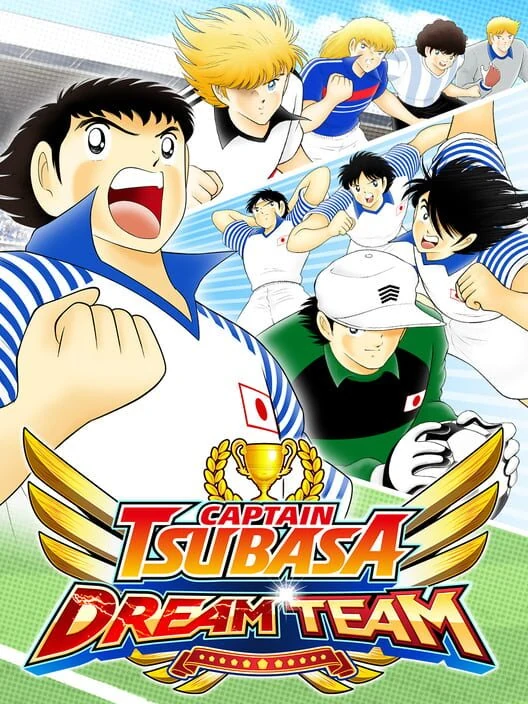
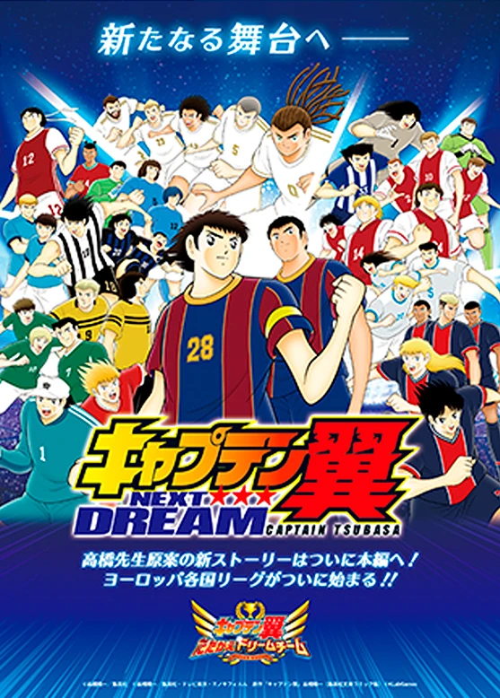
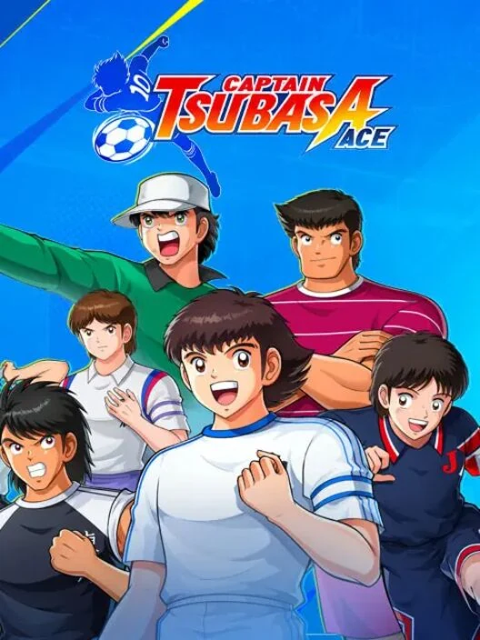
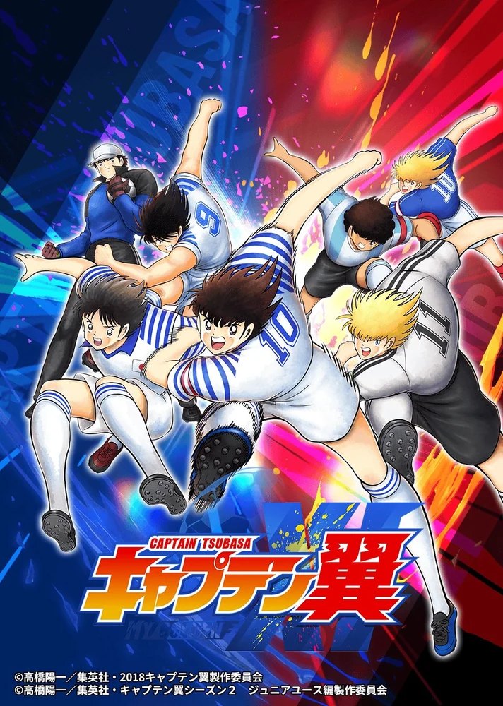
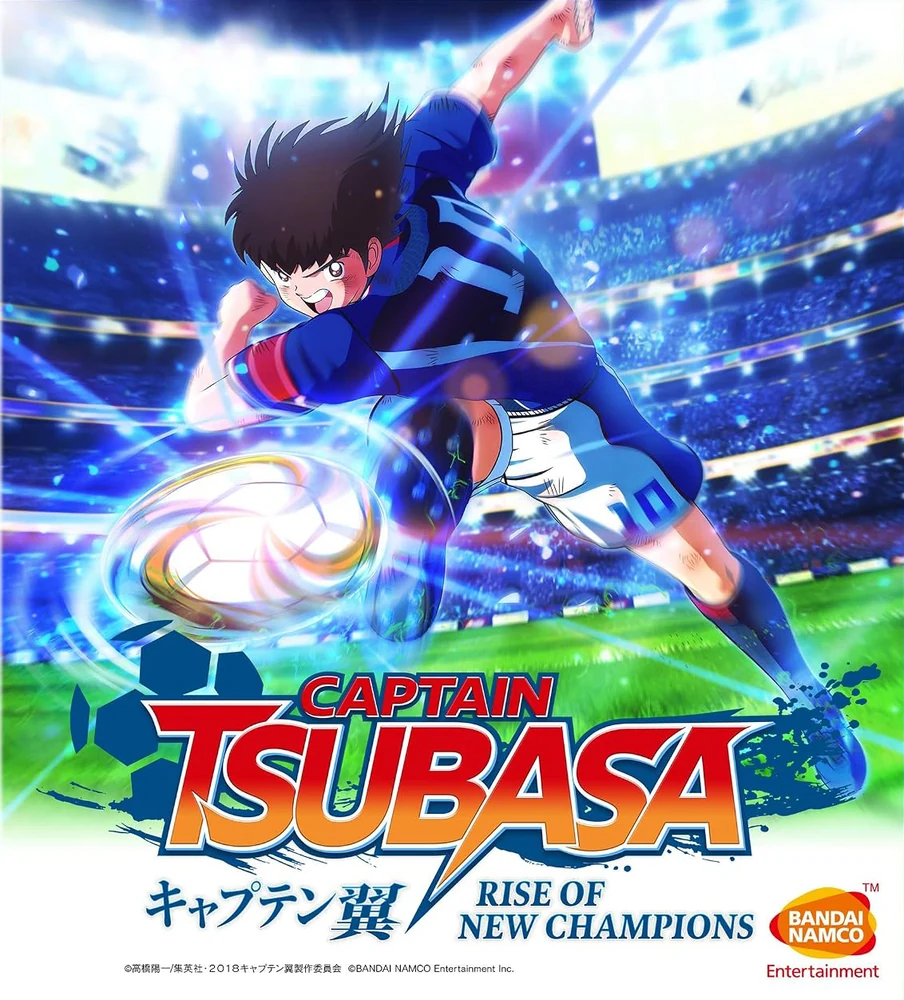
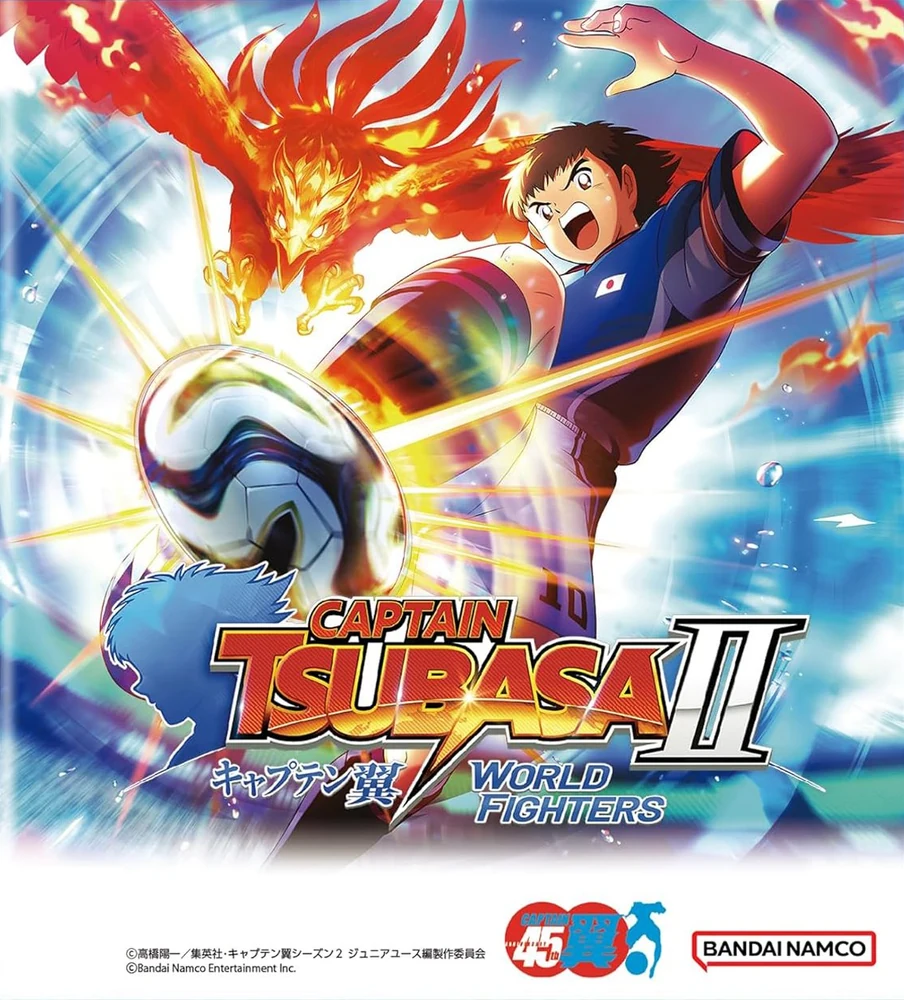

2017
《队长小翼 梦幻队伍》
キャプテン翼 ～たたかえドリームチーム～ / Captain Tsubasa: Dream Team
2017 年推出的官方手游。玩家可收集并培养大空翼、岬太郎、日向小次郎等原作角色，组建专属梦幻队伍，与全球玩家在线对战。 2021 年 9 月起，游戏内开始连载由原作者高桥阳一担任原案与监修的新故事「NEXT DREAM」—— 该篇章已被官方定位为《RISING SUN》之后的正史续作，详见下一条目。

《队长小翼》系列改编游戏横跨近四十年，从 FC 时代的策略足球到近年的动作对战与手机游戏。 此处按手机游戏与主机游戏两大类别收录官方授权代表作。
iOS / Android 等移动平台上的官方授权手游。
キャプテン翼 ～たたかえドリームチーム～ / Captain Tsubasa: Dream Team
2017 年推出的官方手游。玩家可收集并培养大空翼、岬太郎、日向小次郎等原作角色，组建专属梦幻队伍，与全球玩家在线对战。 2021 年 9 月起，游戏内开始连载由原作者高桥阳一担任原案与监修的新故事「NEXT DREAM」—— 该篇章已被官方定位为《RISING SUN》之后的正史续作，详见下一条目。

キャプテン翼 NEXT DREAM / Captain Tsubasa: Next Dream
承接《队长小翼 RISING SUN FINALS》之后的正史续篇。虽非独立发售的游戏， 而是手游《队长小翼 梦幻队伍》内的故事篇章，但剧情由原作者高桥阳一担任原案与监修、KLab 制作团队执笔， 自 2021 年 9 月起以每月一话的形式连载，并有高桥阳一构思的全新原创角色陆续登场。 高桥阳一在访谈中说明了以游戏而非漫画呈现这段故事的原因：「2014 年起在《RISING SUN》描绘奥运， 之后本想描绘黄金世代的欧洲舞台，但奥运迟迟未完，以漫画形式描绘将是相当遥远的事； 以我的年纪，要全部画完也很困难，因此认为放在游戏中展开更好。」故事舞台移至欧洲， 翼挑战西甲与欧冠，若林源三、日向小次郎、岬太郎等人则在德、意、法各国联赛重新出发。

CAPTAIN TSUBASA: ACE
动画正版授权的多人在线足球竞技手游。玩家可操控大空翼、日向小次郎、若林源三等经典角色施展原作必杀技， 在「Dream League（战术编成）」与「Ace Duel（实时操作）」两种模式间选择，体验热血对决。 官方英文名为 CAPTAIN TSUBASA: ACE；该作仅在海外移动端发行，未设日文版名称。

キャプテン翼:My Golden XI【マイイレ】 / Captain Tsubasa: My Golden XI
2026 年 6 月推出的手游新作。玩家挑选喜爱的选手进行「特训」培育，训练过程中的选择 会大幅影响最终能力与习得技能；再将培育完成的选手自由编成，打造专属于自己的「黄金十一人」。 翼的「冲力射门」、日向的「猛虎射门」等原作经典必杀技在游戏中忠实再现， 玩家可指挥这支亲手培育的队伍与强敌展开激战。

家用游戏机与掌机平台上的《队长小翼》作品。
キャプテン翼 RISE OF NEW CHAMPIONS / Captain Tsubasa: Rise of New Champions
系列时隔十年重返家用机平台。游戏改编自 2018 年版动画，玩家可体验以翼为主角的剧情模式，也能创建原创角色在「新秀的故事」中挑战世界强队。 支持线上联机对战与本地多人游玩。

CAPTAIN TSUBASA 2: WORLD FIGHTERS
《新秀崛起》的续作，故事以「世界青年篇」为基础，由高桥阳一老师监修。大空翼率领日本青年队从亚洲青年锦标赛迈向世界青年锦标赛， 收录 22 支国家队与超过 110 名可操作角色。

以下为自动检索整理的自 FC 时代以来的复古掌机游戏清单（Game Boy / Game Boy Advance / Nintendo DS 等），按发售年份排序。
キャプテン翼VS / Captain Tsubasa VS
Tecmo 在 Game Boy 上推出的首款《队长小翼》作品，以操作原作角色进行足球对战为核心，是系列在掌机平台的起点。
キャプテン翼J 全国制覇への挑戦 / Captain Tsubasa J: Zenkoku Seiha e no Chousen
《队长小翼J》动画时期的 Game Boy 作品，玩家带领日本代表从地区预选一路向全国制霸发起挑战。
キャプテン翼 栄光の軌跡 / Captain Tsubasa: Eikou no Kiseki
Konami 登陆 GBA 的系列作品，以回顾形式收录从小学篇到奥运篇的剧情，并加入对战养成要素。
キャプテン翼 新キックオフ / Captain Tsubasa: New Kick Off
Nintendo DS 上的策略足球作品，以触控操作重现必杀射门与经典对决，是系列在掌机平台的后期代表作之一。
备注：以上为各平台代表作。系列历史上还曾推出 FC / SFC / MD / PS / NGC 等平台的众多家用机游戏 （如 Tecmo 制作的 FC 三部曲与 SFC 四部曲、Konami 制作的 GBA / NGC / DS 系列等），如需补完「家用游戏机」复古清单可告知具体范围。
关于 NEXT DREAM：它并非独立发售的游戏，而是手游《队长小翼 梦幻队伍》内的故事篇章。 因该篇章由原作者高桥阳一担任原案与监修，并经官方定位为《RISING SUN》之后的正史续作，故在此单列条目以便查阅。